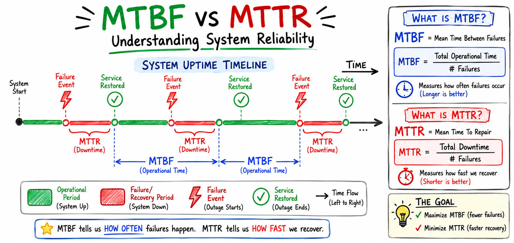
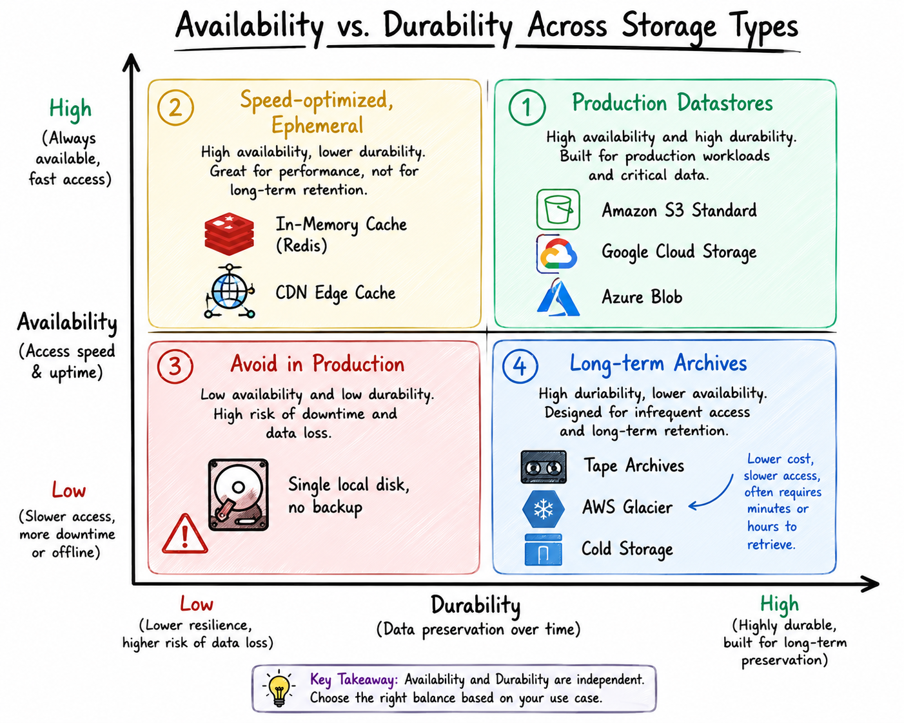
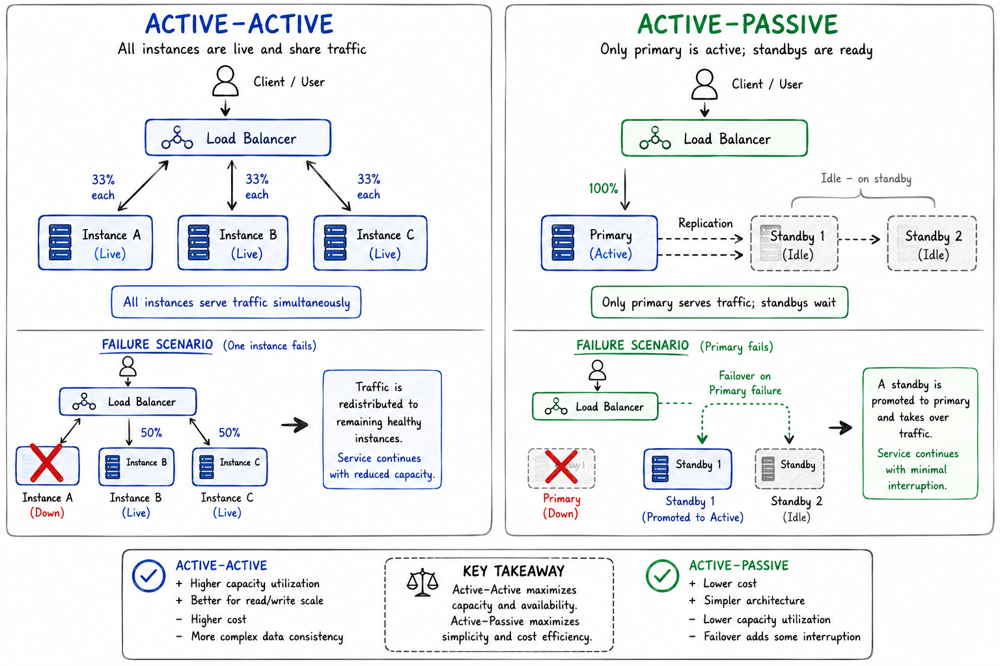
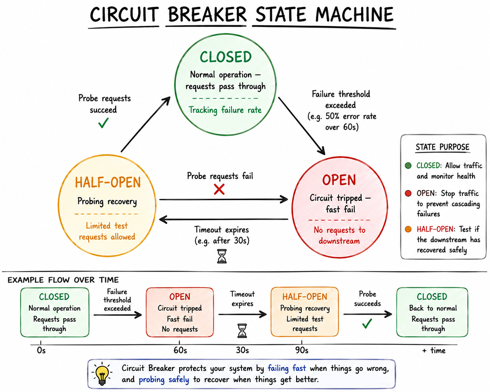
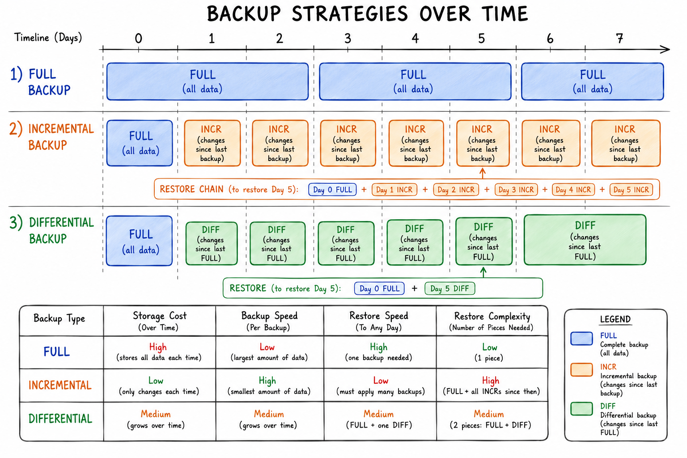
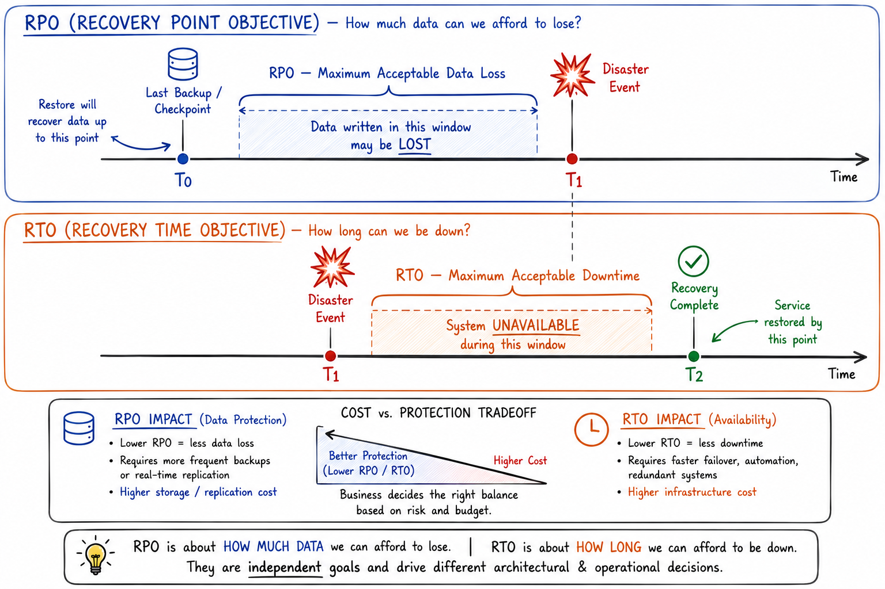
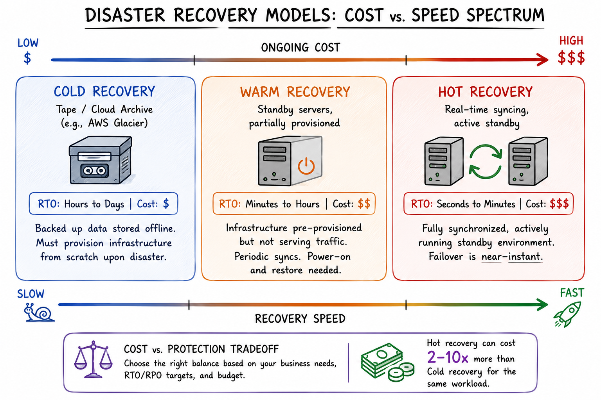
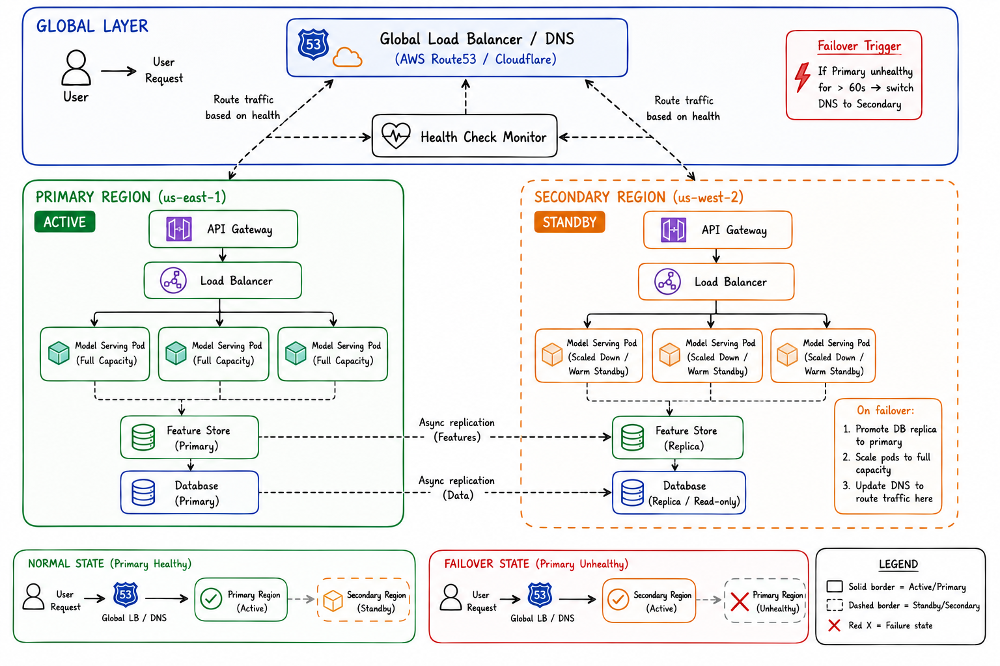

It starts like any other Tuesday. Your ML pipeline is humming, the feature store is serving predictions, dashboards look healthy, and you're finally getting to that backlog ticket you've been putting off for two weeks.
Then Slack lights up.
"Hey — the recommendation engine is returning the same result for everyone. Is something wrong?"
You open the monitoring dashboard. One of your feature store replicas went unresponsive fifteen minutes ago. No alert fired. No failover triggered. Hundreds of thousands of users are getting stale predictions because your system had no plan for what to do when a single node disappeared.
This scenario — or a version of it — plays out every day in engineering organizations around the world. And almost always, the post-mortem conclusion is the same: we didn't design for failure from the start.
This article is a comprehensive guide to building systems that don't just work in ideal conditions — they degrade gracefully, recover automatically, and let you sleep at night. We'll start from first principles and work our way up to the architectural patterns, backup strategies, and disaster recovery frameworks used by production-grade systems at scale.
Why Reliability Isn't Optional
There's a mental model that trips up most engineers early in their careers: the belief that reliability engineering is "ops work" — something you bolt on after you've shipped the feature, or delegate entirely to your SRE team.
In reality, reliability is an emergent property of every design decision you make. The database schema you chose, the way you cache model predictions, whether your training pipeline checkpoints intermediate states — these decisions accumulate into a system that is either resilient to failure or surprisingly fragile.
For data scientists and ML engineers specifically, the stakes are higher than they first appear. A recommendation engine returning stale predictions isn't just a user experience problem — it's revenue. A feature store that goes dark mid-inference causes model drift that's invisible in your evaluation metrics but corrosive to model trust. A data pipeline that silently loses records creates training data corruption that won't surface for months.
Reliability, availability, and disaster recovery (RA&DR) aren't about perfection. Systems will fail. Hardware dies. Networks partition. Cloud regions go down. The discipline is about designing systems that fail safely, recover quickly, and lose as little data as possible when they do.
Let's start with the vocabulary.
Measuring What Matters — System Reliability Metrics
"You can't improve what you can't measure." — a cliché that remains entirely true.
Before you can design a reliable system, you need a shared language for what "reliable" actually means. Reliability metrics give engineering teams, product managers, and business stakeholders a common framework for discussing failure, recovery, and acceptable risk.
MTBF: Mean Time Between Failures
MTBF measures the average operating time between repairable failures. Think of it as the "expected lifetime" of a component or system before it breaks down again.
Formula:
FormulaMTBF = Total Operational Time / Number of Failures
Example: If a database node runs for 10,000 hours and experiences 5 failures in that period, the MTBF is 2,000 hours (~83 days).
A high MTBF is good. It means failures are rare. But MTBF alone is insufficient — a system with a high MTBF that takes three days to recover from each failure is arguably less reliable than one with a moderate MTBF that self-heals in seconds.
ML Engineering context: MTBF is relevant when thinking about your training infrastructure. If your GPU cluster experiences node failures every 48 hours on average during multi-week training runs, that should directly inform how frequently you checkpoint model weights. Training a large language model for 72 hours without checkpointing on a cluster with a 48-hour MTBF is a statistical gamble you will almost certainly lose.
MTTR: Mean Time To Recovery
MTTR is the flip side of MTBF — it measures how long it takes to restore service after a failure occurs.
Formula:
FormulaMTTR = Total Downtime / Number of Failures
Example: If your system was down for a total of 8 hours across 4 incidents, your MTTR is 2 hours per incident.

The relationship between MTBF and MTTR defines your system's availability. Availability is the percentage of time a system is operational and usable:
FormulaAvailability = MTBF / (MTBF + MTTR)
Maximize MTBF (fail less often), minimize MTTR (recover faster) — these are the two levers of availability.
Practical insight: In most modern cloud-native systems, reducing MTTR is often more impactful than improving MTBF. You can't always prevent failures, but with the right automation, you can reduce MTTR from hours to minutes or even seconds. This is why observability, automated runbooks, and self-healing infrastructure are so heavily invested in by high-reliability organizations.
SLAs: The Contract Between You and Your Users
A Service Level Agreement (SLA) is a formal commitment — often contractual — about the expected behavior of a service. It typically covers three dimensions:
| SLA Dimension | What It Measures | Example Target |
|---|---|---|
| Uptime / Availability | Percentage of time the service is operational | 99.9% ("three nines") |
| Response Time / Latency | How quickly the service responds to requests | p99 < 200ms |
| Error Rate | Percentage of requests that result in errors | < 0.1% |
The "nines" of availability is a common shorthand you'll encounter everywhere:
| Availability | Annual Downtime | Monthly Downtime |
|---|---|---|
| 99% ("two nines") | ~87.6 hours | ~7.3 hours |
| 99.9% ("three nines") | ~8.76 hours | ~43.8 minutes |
| 99.99% ("four nines") | ~52.6 minutes | ~4.4 minutes |
| 99.999% ("five nines") | ~5.26 minutes | ~26.3 seconds |
| 99.9999% ("six nines") | ~31.5 seconds | ~2.6 seconds |
"Five nines" availability is the gold standard for mission-critical systems — and it's deceptively hard to achieve. At 99.999% availability, you have roughly five minutes per year of allowable downtime. A single botched deployment that takes ten minutes to roll back burns your entire annual budget twice over.
For ML systems: SLAs are often more nuanced than simple uptime. Consider:
- Prediction latency SLA: "95% of inference calls complete within 50ms."
- Data freshness SLA: "Feature values are no more than 5 minutes stale."
- Model staleness SLA: "Production models are retrained within 24 hours of data drift detection."
These ML-specific SLAs don't appear in textbooks but are critical for maintaining model utility in production.
The difference between SLIs, SLOs, and SLAs:
- SLI (Service Level Indicator): The actual measured metric (e.g., request latency in milliseconds).
- SLO (Service Level Objective): Your internal target for that metric (e.g., p99 latency < 200ms).
- SLA (Service Level Agreement): The external, often legally binding commitment (e.g., "we guarantee p99 latency < 500ms or provide service credits").
Your SLO should always be tighter than your SLA. If you promise users 99.9% uptime in your SLA, your internal SLO might target 99.95% to create a buffer for the inevitable.
Availability vs. Durability: A Critical Distinction
These two terms are frequently conflated, and confusing them leads to serious architectural mistakes.
Availability answers: "Can I access my data right now?"
Durability answers: "Will my data still exist in the future?"
Amazon S3 is the classic example that makes this crisp:
- S3 offers 99.999999999% (eleven nines) durability — the probability of losing an object is astronomically small.
- S3 Standard offers 99.99% availability — there's a small but non-zero chance you can't access an object at any given moment.
A system can be highly available but not durable (e.g., a cache — always fast to access, but data evicts). It can be highly durable but not always available (e.g., a cold archive stored on tape — data is definitely there, but retrieval takes hours).

The practical takeaway: When designing data storage for your ML systems, always explicitly state both your availability and durability requirements. Your feature store might need high availability (sub-millisecond reads) but only moderate durability (features can be recomputed from raw data). Your model registry, on the other hand, might accept lower availability (accessed rarely) but demands near-perfect durability (losing a production model checkpoint is catastrophic).
Never Go Down — High Availability & Fault Tolerance
Having clear metrics is step one. Step two is building systems that actually hit those metrics.
High Availability (HA) is the architectural philosophy that systems should remain operational despite component failures. Fault Tolerance takes this a step further: a fault-tolerant system not only survives individual failures but does so without any degradation in service quality.
The difference matters. An HA system might briefly redirect traffic during a failover. A fault-tolerant system might be so well-designed that users never notice a node went offline.
Both goals require deliberate architectural choices, starting with redundancy.
Redundancy Strategies: Eliminating the Single Point of Failure
A Single Point of Failure (SPOF) is any component whose failure brings down the entire system. Eliminating SPOFs is the first law of high-availability architecture.
The tool for eliminating SPOFs is redundancy — having multiple copies of critical components so that no single failure is catastrophic.
Active-Active Redundancy
In an active-active configuration, multiple instances of a service are all running simultaneously and all serving traffic. If one fails, the others absorb its load — often without any observable blip for users.
Example: A Kubernetes deployment with 3 replicas of a model serving pod. Requests are distributed across all three by a load balancer. If one pod crashes, traffic is routed to the remaining two while Kubernetes spins up a replacement.
Tradeoff: Active-active requires all nodes to stay in sync, which adds complexity — especially for stateful services like databases. For stateless services like REST APIs or model inference endpoints, active-active is almost always the right choice.
ML Engineering context: Model serving is a natural fit for active-active. Multiple replicas of your inference server are stateless — each one can serve any request independently. This is how services like TensorFlow Serving, Triton Inference Server, or Ray Serve are typically deployed in production.
Active-Passive Redundancy
In active-passive (also called primary-standby or primary-replica), one instance handles all traffic while one or more standbys remain ready but idle. When the primary fails, a standby is promoted to active.
Example: A primary PostgreSQL database node with a hot standby replica streaming WAL (Write-Ahead Log) changes. If the primary crashes, the standby can be promoted in under a minute.
Tradeoff: Active-passive is simpler to implement for stateful systems, but the failover isn't instant. There's a brief window of unavailability during promotion. Additionally, the standby is "wasted capacity" in normal operation — it's not serving any traffic.

N+1 Redundancy
N+1 redundancy is a pragmatic middle ground: you provision exactly one extra component beyond what you need for normal operation. If N=3 servers can handle your peak load, you provision 4. The "+1" is your failure buffer.
This is the standard approach for infrastructure where you need redundancy without the cost of doubling your fleet. It's common in:
- Database replica sets (2 replicas + 1 arbiter in MongoDB)
- Kubernetes node pools (provision N+1 nodes for your pod count)
- GPU clusters for training (N+1 nodes in case a node fails mid-run)
The math: N+1 redundancy protects you from any single component failure. For protection against simultaneous failures, you'd need N+2 (or higher). The right number depends on your failure probability model and your tolerance for risk.
Architectural Patterns: Design for Failure
Beyond raw redundancy, there are specific patterns that teams use to build availability into the architecture of distributed systems.
Load Balancers: The Traffic Director
A load balancer distributes incoming requests across multiple healthy backend instances. It's both a redundancy mechanism and a scalability mechanism — it ensures no single server is overwhelmed, and it automatically stops sending traffic to unhealthy instances.
Modern load balancers operate at two layers:
| Type | Layer | What It Routes On | Common Use Case |
|---|---|---|---|
| L4 (Network LB) | Transport | IP address + TCP/UDP port | Simple, high-throughput routing |
| L7 (Application LB) | Application | URL path, HTTP headers, cookies | Microservices, path-based routing, A/B testing |
L7 load balancers are particularly powerful for ML systems. You can use path-based routing to direct /v1/predict to your stable model and /v2/predict to a candidate model — a clean pattern for A/B testing models in production.
Health checks are the heartbeat of load balancing. A load balancer continuously probes each backend with a health check endpoint. Instances that fail health checks are automatically removed from the rotation. Here's a minimal example:
Python# FastAPI model serving endpoint with health check
from fastapi import FastAPI
import torch
app = FastAPI()
model = torch.load("model.pt")
model.eval()
@app.get("/health")
def health_check():
"""
Called by the load balancer every few seconds.
Return 200 OK only if the model is loaded and ready.
"""
if model is None:
return {"status": "unhealthy"}, 503
return {"status": "healthy", "model_version": "v2.1.3"}
@app.post("/v1/predict")
def predict(features: dict):
# Inference logic
...
A Kubernetes liveness and readiness probe configuration for this same service:
YAML# kubernetes/deployment.yaml
livenessProbe:
httpGet:
path: /health
port: 8000
initialDelaySeconds: 30
periodSeconds: 10
failureThreshold: 3
readinessProbe:
httpGet:
path: /health
port: 8000
initialDelaySeconds: 10
periodSeconds: 5
failureThreshold: 2
The liveness probe answers: "Is this pod alive?" If it fails, Kubernetes restarts the pod. The readiness probe answers: "Is this pod ready to serve traffic?" If it fails, Kubernetes removes the pod from the load balancer without restarting it — crucial for pods that are still warming up (e.g., loading large model weights into GPU memory).
Failover Mechanisms: Automatic Recovery from Failure
A failover mechanism automatically detects that a primary resource has failed and redirects workloads to a healthy backup — without requiring human intervention.
The key design challenge of failover is the split-brain problem: what happens if a standby node incorrectly concludes the primary is down (due to a network partition) and promotes itself, while the primary is still running? Now you have two primaries, and they'll start accepting conflicting writes.
Modern systems solve this through:
- Heartbeat timeouts with fencing tokens: The failing node must be "fenced" (blocked from writing) before the new primary takes over.
- Consensus-based elections: A quorum of nodes must agree before a new primary is elected (more on this in the DR section).
- External arbitrators: A third-party service (like ZooKeeper) breaks ties.
DNS-based failover is a simpler pattern for stateless services: when the primary endpoint goes down, DNS is updated to point to a standby. The downside is DNS TTL — clients cache old DNS responses, so failover can take minutes unless TTLs are set very low (which has its own performance implications).
Graceful Degradation: Staying Partially Useful
Graceful degradation is the principle that a system should continue providing some value even when it can't provide full value. It's the opposite of an all-or-nothing failure mode.
Think of it like a commercial airplane. If one engine fails, the plane doesn't fall out of the sky — it continues flying on the remaining engines. The experience degrades (lower ceiling, reduced speed) but the plane doesn't crash.
Real examples:
- Netflix disables personalized recommendations when the recommendation service is down, but still shows generic content rather than a blank screen.
- Google Maps shows cached map tiles when offline rather than showing nothing.
- An e-commerce site hides review scores when the reviews service is unavailable rather than crashing the product page.
ML-specific graceful degradation patterns:
| Failure Scenario | Degraded Response |
|---|---|
| Feature store unavailable | Fall back to default feature values or serve last-known-good features |
| Primary model times out | Serve predictions from a simpler, faster fallback model |
| Real-time feature pipeline down | Fall back to batch-computed features (slightly stale) |
| Model version A crashes | Route all traffic to model version B |
Python# Graceful degradation example: ML prediction with fallbacks
import functools
import logging
def predict_with_fallback(user_id: str, features: dict) -> dict:
"""
Try the primary personalized model first.
Fall back to a lightweight model if primary fails.
Fall back to default recommendations if both fail.
"""
try:
# Primary: personalized deep model (high latency, high quality)
result = primary_model.predict(user_id, features)
return {"predictions": result, "model": "primary", "degraded": False}
except PrimaryModelException as e:
logging.warning(f"Primary model failed: {e}. Trying fallback model.")
try:
# Secondary: lightweight collaborative filtering (fast, good)
result = fallback_model.predict(user_id)
return {"predictions": result, "model": "fallback", "degraded": True}
except FallbackModelException as e:
logging.error(f"Fallback model also failed: {e}. Using defaults.")
# Tertiary: static defaults (always available)
return {
"predictions": DEFAULT_RECOMMENDATIONS,
"model": "default",
"degraded": True
}
Graceful degradation requires that you proactively define your fallback hierarchy at design time — not during an incident.
Circuit Breakers & Retries: Preventing Cascading Failures
Imagine your model serving endpoint starts timing out. Without a circuit breaker, every client that calls it will wait the full timeout duration before failing — potentially exhausting connection pools, thread pools, or goroutine limits. A slow service becomes a service that drags down everything that depends on it. This is a cascading failure.
The circuit breaker pattern (borrowed from electrical engineering) prevents cascading failures by monitoring the failure rate of downstream calls and "tripping" the circuit when failures exceed a threshold — temporarily stopping all calls to the failing service.
A circuit breaker has three states:
- Closed (normal operation): Requests flow through. The circuit breaker monitors failure rates.
- Open (failure detected): All requests fail immediately without calling the downstream service. Callers get a fast error (or can trigger graceful degradation).
- Half-Open (recovery probe): After a timeout, a few test requests are let through. If they succeed, the circuit closes again.

Here's a minimal Python circuit breaker using the pybreaker library:
Pythonimport pybreaker
import requests
# Trip after 5 consecutive failures; reset after 60 seconds
circuit_breaker = pybreaker.CircuitBreaker(
fail_max=5,
reset_timeout=60
)
@circuit_breaker
def call_feature_store(entity_id: str) -> dict:
response = requests.get(
f"https://feature-store.internal/features/{entity_id}",
timeout=0.1 # 100ms hard timeout
)
response.raise_for_status()
return response.json()
def get_features_safe(entity_id: str) -> dict:
try:
return call_feature_store(entity_id)
except pybreaker.CircuitBreakerError:
# Circuit is open — use cached or default features
return get_cached_features(entity_id)
except requests.RequestException as e:
logging.warning(f"Feature store call failed: {e}")
return get_cached_features(entity_id)
Retries with exponential backoff are the complement to circuit breakers. When a request fails due to a transient error, retrying makes sense. But retrying immediately, or retrying too aggressively, can worsen an overloaded server's condition. Exponential backoff with jitter spaces retries out progressively:
Pythonimport time
import random
def retry_with_backoff(fn, max_retries=4, base_delay=0.1, max_delay=10.0):
"""
Retry fn with exponential backoff + jitter.
Backoff: 0.1s, 0.2s, 0.4s, 0.8s (+ random jitter each time)
"""
for attempt in range(max_retries):
try:
return fn()
except TransientException as e:
if attempt == max_retries - 1:
raise
delay = min(base_delay * (2 ** attempt), max_delay)
jitter = random.uniform(0, delay * 0.1)
time.sleep(delay + jitter)
The important rule: Retries are for transient errors. They are not appropriate for:
- 4xx errors (bad request, unauthorized) — retrying won't fix a malformed request.
- Operations that are not idempotent — retrying a non-idempotent write can cause duplicate data.
- When the circuit breaker is open — don't retry into a failing downstream system.
System Health: Detecting, Responding, and Recovering
Redundancy and architectural patterns give you the infrastructure to survive failures. But you also need the operational capabilities to know when something is wrong and act on it quickly.
Continuous Monitoring
Modern distributed systems emit three types of observability signals, collectively called the "three pillars":
| Pillar | What It Is | Example Tools |
|---|---|---|
| Metrics | Numeric time-series data (counts, gauges, histograms) | Prometheus, Datadog, CloudWatch |
| Logs | Structured or unstructured event records | ELK Stack, Loki, Splunk |
| Traces | End-to-end request journey across services | Jaeger, Zipkin, AWS X-Ray |
For ML systems, you need a fourth dimension: model monitoring — tracking data drift, concept drift, prediction distribution shift, and feature skew. Tools like Evidently, WhyLabs, and Arize fill this gap.
A practical alerting philosophy: Alert on symptoms, not causes. "Error rate on /predict is > 1% for 5 minutes" is a symptom alert — it fires exactly when users are affected. "CPU utilization on model server is > 80%" is a cause alert — it fires often when nothing is actually wrong, leading to alert fatigue.
Self-Healing Systems
A self-healing system automatically detects and remedies common failure conditions without human intervention. Kubernetes is the canonical example:
- CrashLoopBackOff recovery: Kubernetes detects a pod that keeps crashing and restarts it with exponential backoff.
- Liveness probe failure → automatic restart: If a pod's liveness probe fails N consecutive times, Kubernetes kills and restarts it.
- Node failure → pod rescheduling: If a node goes offline, Kubernetes reschedules the pods that were running on it to healthy nodes.
- OOMKilled → restart + resource limit enforcement: If a container is killed for exceeding memory limits, Kubernetes restarts it and enforces the limits.
For ML systems, self-healing might also mean:
- Automatically triggering model retraining when data drift exceeds a threshold.
- Restarting a Spark streaming job that died mid-processing.
- Re-enqueuing failed batch prediction jobs.
Automated Recovery
Automated recovery goes beyond self-healing — it's about automating the runbook that an on-call engineer would otherwise execute manually. Runbook automation tools like PagerDuty Process Automation, AWS Systems Manager Automation, or custom Lambda functions can execute complex recovery procedures in response to alerts:
YAML# Example: AWS Systems Manager Automation Document
# Automatically restores a database replica from backup if health check fails
description: "Auto-recover replica database"
schemaVersion: "0.3"
mainSteps:
- name: CheckReplicaHealth
action: aws:executeAwsApi
inputs:
Service: rds
Api: DescribeDBInstances
Filters:
- Name: db-instance-identifier
Values: ["prod-replica-1"]
outputs:
- Name: DBStatus
Selector: $.DBInstances[0].DBInstanceStatus
- name: RestoreFromSnapshot
action: aws:executeAwsApi
onFailure: Abort
isEnd: false
inputs:
Service: rds
Api: RestoreDBInstanceFromDBSnapshot
DBSnapshotIdentifier: "prod-daily-snapshot-latest"
nextStep: WaitForRestoreComplete
The goal is to reduce MTTR to the point where on-call engineers are reviewing incident reports rather than executing recovery procedures — automated systems move faster and don't make tired, 3 AM mistakes.
Your Safety Net — Backup Strategies
High availability and fault tolerance protect you against infrastructure failures. But there's a different class of failure they don't protect against: data loss. A corrupted database write, a developer who accidentally drops a table, ransomware that encrypts your data store — these require a different defense: backups.
A backup is a separate, independently stored copy of your data that can be used to restore the original if it's lost or corrupted. The word "separate" is doing a lot of work in that sentence. A replica isn't a backup. A read replica of your production database, maintained by replication, will faithfully replicate a DROP TABLE command just as quickly as it replicates normal writes.
True backups are independent snapshots in time, stored somewhere the primary system can't accidentally overwrite or corrupt.
Backup Types: Know the Tradeoffs

Full Backup
A full backup captures a complete snapshot of all protected data. It's the simplest approach and produces the easiest-to-restore backup — you need only the single snapshot.
Pros: Simple restore process; no dependencies on previous backups.
Cons: Storage-intensive; slow to produce (must read and copy all data); if backups run daily, you can afford fewer of them.
Use case: Critical, relatively static datasets — model registry snapshots, data warehouse exports, complete database dumps. A weekly full backup of your entire feature store might be appropriate.
Incremental Backup
An incremental backup stores only the changes since the most recent backup (full or incremental). Day 1: back up everything changed since the full backup. Day 2: back up everything changed since Day 1. And so on.
Pros: Very fast and storage-efficient — only changed data is backed up.
Cons: Restore is complex and slow — you need the full backup plus every incremental since then, in sequence. A chain of 30 incrementals is 31 separate restore operations.
Use case: High-frequency backups of rapidly changing data — transactional databases, event streams, write-ahead logs.
Differential Backup
A differential backup stores all changes since the most recent full backup — regardless of when the last differential ran. It's a middle ground between full and incremental.
Pros: Restore requires only two pieces: the last full backup + the most recent differential. Faster restore than incrementals.
Cons: Grows larger over time (by the end of the week, it's storing 6 days of changes). Slower to create than incrementals.
The practical recommendation for most teams: Use a hybrid strategy — weekly full backups, daily incrementals, with periodic restore testing. For ML training data, consider a version-controlled data lake (Delta Lake, Apache Iceberg) which provides time-travel capabilities and effectively gives you free incremental backups.
Python# Example: Automated daily backup with retention policy using boto3
import boto3
from datetime import datetime, timedelta
s3 = boto3.client("s3")
SOURCE_BUCKET = "prod-feature-store"
BACKUP_BUCKET = "prod-feature-store-backups"
RETENTION_DAYS = 30
def run_backup():
timestamp = datetime.utcnow().strftime("%Y%m%d_%H%M%S")
# List objects in source bucket
paginator = s3.get_paginator("list_objects_v2")
for page in paginator.paginate(Bucket=SOURCE_BUCKET):
for obj in page.get("Contents", []):
source_key = obj["Key"]
backup_key = f"daily/{timestamp}/{source_key}"
# Copy to backup bucket
s3.copy_object(
Bucket=BACKUP_BUCKET,
CopySource={"Bucket": SOURCE_BUCKET, "Key": source_key},
Key=backup_key,
ServerSideEncryption="AES256", # Encrypt at rest
)
print(f"Backup completed: {timestamp}")
def prune_old_backups():
cutoff = datetime.utcnow() - timedelta(days=RETENTION_DAYS)
paginator = s3.get_paginator("list_objects_v2")
for page in paginator.paginate(Bucket=BACKUP_BUCKET, Prefix="daily/"):
for obj in page.get("Contents", []):
if obj["LastModified"].replace(tzinfo=None) < cutoff:
s3.delete_object(Bucket=BACKUP_BUCKET, Key=obj["Key"])
print(f"Pruned expired backup: {obj['Key']}")
Backup Best Practices: Beyond "Have a Backup"
Having a backup is necessary but not sufficient. The graveyard of data disasters is filled with teams who had backups — backups they discovered, at the worst possible moment, were corrupted, incomplete, or impossible to restore.
The 3-2-1 Rule
The 3-2-1 rule is the foundational principle of backup strategy:
- 3 copies of your data (original + 2 backups)
- 2 different storage media (e.g., local disk + cloud object storage)
- 1 copy offsite (in a different physical location or cloud region)
Why three copies? Because single backups fail. Disks fail. Cloud regions have outages. A second copy on the same media as the first isn't really a backup — it's just a duplicate on equally vulnerable infrastructure.
For cloud-native teams, a modern variant is 3-2-1-1-0:
- 3 copies on 2 different media with 1 offsite copy
- 1 copy that is immutable (write-once, read-many — protects against ransomware)
- 0 errors in backup validation (automated restore testing, discussed below)
Encryption & Immutability
Backups are a prime target for ransomware attacks. An attacker who compromises your backup storage and encrypts your backups has neutralized your recovery capability entirely.
Two defenses:
- Encryption: Encrypt backups both in transit (TLS) and at rest (AES-256). Your backup data is as sensitive as your production data — arguably more so.
- Immutability: Use object lock policies (AWS S3 Object Lock, Azure Immutable Blob Storage) to make backups write-once. Even if an attacker gains write access to your backup bucket, they can't overwrite or delete existing backups.
JSON// S3 Object Lock configuration: prevent deletion for 30 days
{
"ObjectLockEnabled": "Enabled",
"Rule": {
"DefaultRetention": {
"Mode": "GOVERNANCE",
"Days": 30
}
}
}
Cloud-Native Tooling
Modern cloud providers offer managed backup services that handle scheduling, versioning, encryption, and cross-region replication:
| Service | Cloud | What It Backs Up |
|---|---|---|
| AWS Backup | AWS | EC2, EBS, RDS, DynamoDB, EFS, S3 |
| Azure Backup | Azure | VMs, SQL, SAP HANA, Blobs |
| Google Cloud Backup | GCP | VMs, databases, GKE |
For ML teams, additional relevant tooling includes:
- MLflow Model Registry: Provides versioning for model artifacts with S3/GCS/Azure Blob backends.
- Delta Lake / Apache Iceberg: Time-travel queries on data lakes — effectively giving you point-in-time recovery for your training data.
- DVC (Data Version Control): Git-like versioning for datasets and ML pipeline artifacts.
The key advantage of managed cloud backup is operational simplicity — you define the policy, the service handles execution, and you get audit trails and compliance reporting out of the box.
Regular Restore Testing
This is the most important backup best practice, and also the most consistently neglected.
A backup you have never restored is a hypothesis, not a guarantee. Disk corruption, software version mismatches, incomplete transfers, missing decryption keys — these issues are invisible until you actually try to restore. And you do not want to discover them during an actual emergency.
Best practice: Automate restore testing as a regular scheduled job. At minimum:
- Monthly: Restore a sample backup to a test environment and validate data integrity.
- Weekly: Verify backup completion and run checksum validation against known hashes.
- After every infrastructure change: Re-validate that backups still work with the new configuration.
Python# Automated restore validation — runs weekly in CI/CD pipeline
import hashlib
import subprocess
def validate_backup_restore(backup_path: str, expected_checksum: str) -> bool:
"""
Restore a database backup to a test environment and verify integrity.
Returns True if restore is valid, False otherwise.
"""
# Step 1: Restore to ephemeral test DB
print("Restoring backup to test environment...")
result = subprocess.run(
["pg_restore", "--host=test-db", "--dbname=validation_db", backup_path],
capture_output=True, text=True
)
if result.returncode != 0:
print(f"RESTORE FAILED: {result.stderr}")
return False
# Step 2: Run data validation queries
print("Running integrity checks...")
row_count = query_test_db("SELECT COUNT(*) FROM critical_table;")
if row_count == 0:
print("VALIDATION FAILED: critical_table is empty after restore")
return False
# Step 3: Verify checksum
with open(backup_path, "rb") as f:
actual_checksum = hashlib.sha256(f.read()).hexdigest()
if actual_checksum != expected_checksum:
print(f"CHECKSUM MISMATCH: backup may be corrupted")
return False
print(f"Restore validation PASSED ✓ — {row_count} rows verified")
return True
If your restore validation is not automated, it will gradually be skipped as teams get busy. Automate it.
When Things Go Really Wrong — Disaster Recovery
High availability keeps your service running through routine failures. Backups protect your data from corruption and deletion. But neither is sufficient for the class of incident where an entire system — or an entire region — becomes unavailable.
A hurricane destroys a data center. A cloud provider has a major regional outage. A cyberattack takes down your entire infrastructure. Your core database is corrupted and must be restored from a 12-hour-old backup.
These are Disaster scenarios with a capital D, and they require a separate discipline: Disaster Recovery (DR).
DR is not just a technical problem. It's a business problem. The core question of DR planning is: "How much downtime and how much data loss can the business tolerate — and what is it worth spending to achieve that tolerance?"
The answer is expressed through two business-defined objectives.
Performance Objectives: RTO and RPO
RTO: Recovery Time Objective
RTO is the maximum acceptable duration of downtime before service must be restored. It answers: "How long can we be down?"
Examples:
- A payment processing system might have an RTO of 15 minutes — any longer and regulatory requirements are violated and revenue loss becomes significant.
- An internal analytics dashboard might have an RTO of 24 hours — a day of unavailability is tolerable.
- An autonomous vehicle control system might have an RTO measured in milliseconds.
RTO drives infrastructure investment. A 15-minute RTO requires a pre-warmed, continuously synchronized standby environment. A 24-hour RTO allows you to restore from last night's backup. The difference in cost can be orders of magnitude.
RPO: Recovery Point Objective
RPO is the maximum acceptable amount of data loss, measured as time elapsed since the last good backup. It answers: "How much data can we afford to lose?"
Examples:
- A financial trading system might have an RPO of zero — losing even one transaction is unacceptable.
- A social media application might have an RPO of 5 minutes — users losing the last few minutes of posts is tolerable.
- A daily analytics ETL pipeline might have an RPO of 24 hours — losing a day's run is painful but the data can be reprocessed.
RPO drives backup frequency. If your RPO is 1 hour, you must take backups at least every hour. An RPO of zero effectively requires synchronous replication to a standby.

A practical framework for setting RTO and RPO:
Start with the business impact. For each system, quantify:
- Revenue impact per hour of downtime (for revenue-generating systems)
- Cost of data loss (regulatory fines, customer trust, reprocessing cost)
- Maximum recovery cost the business will fund
The intersection of impact and cost gives you the target RTO and RPO. This conversation should happen between engineering and business leadership — engineers can't set these numbers alone, because they represent business risk tolerance decisions.
Recovery Models: Matching Architecture to Objectives
Different RTO/RPO targets require fundamentally different infrastructure architectures. There's a direct tradeoff: shorter RTO/RPO = higher ongoing cost.

Cold Recovery (Tape / Cloud Archive)
The most economical DR option. Your data is backed up to an offline or near-offline medium (tape, AWS Glacier, Azure Archive Storage). In a disaster, you provision infrastructure from scratch and restore from the backup.
RTO: Hours to days. You're waiting for hardware provisioning (or Glacier retrieval, which takes up to 12 hours on standard tier) plus restore time.
RPO: Determined by backup frequency — typically hours to days.
Cost: Very low ongoing cost. You pay only for storage.
Use case: Non-critical systems, compliance archiving, historical data that doesn't need fast recovery.
For ML teams: Cold recovery is appropriate for historical training datasets, model artifacts beyond the most recent N versions, and experiment tracking data. A model you trained six months ago doesn't need sub-hour recovery.
Warm Recovery (Standby Servers)
A warm standby is a partially provisioned environment that receives periodic backups or asynchronous replication. It's not serving traffic, but the infrastructure is ready to accept it — you don't need to provision from scratch.
RTO: Minutes to hours. You need to restore the latest backup, run startup checks, and redirect traffic.
RPO: Typically hours (determined by replication/backup frequency).
Cost: Moderate. You pay for standby infrastructure that isn't generating revenue.
Use case: Business-critical but not mission-critical systems — internal applications, secondary API services, analytics pipelines.
A warm standby might receive daily backup restores and hourly replication — enough that you can fail over within an hour and lose at most an hour of data.
Hot Recovery (Real-Time Syncing)
A hot standby is a fully provisioned, continuously synchronized environment that is ready for immediate failover. In some implementations, it's actively handling some traffic (see: active-active). In others, it's a dark mirror that can be lit up in seconds.
RTO: Seconds to minutes. Failover is essentially a DNS switch or load balancer redirect.
RPO: Near-zero. Real-time synchronization means very little data is in-flight when a disaster strikes.
Cost: High. You're running double (or more) the infrastructure at all times.
Use case: Mission-critical, zero-tolerance systems — payment processing, real-time fraud detection, high-frequency trading, life-critical ML systems.
The DNS trick that makes hot failover fast: Maintaining an extremely low DNS TTL (Time-to-Live) of 30–60 seconds ensures that when you update your DNS record to point to the standby environment, clients begin resolving the new IP within a minute. Combine with pre-warmed connection pools in the standby, and users barely notice the switch.
DR Implementation: The Engineering Details
Planning RTO/RPO targets is strategy. Building the infrastructure to meet them is engineering. Here's where things get genuinely hard.
Geo-Distributed Challenges
Multi-region deployments solve the problem of regional failure — but they introduce a new set of problems: the fundamental tension between consistency and availability in distributed systems.
This is best understood through the CAP theorem: In any distributed system experiencing a network partition, you must choose between:
- Consistency (C): Every read receives the most recent write or an error.
- Availability (A): Every request receives a response, though it might be stale.
You cannot have both during a partition. This isn't a limitation of engineering — it's a mathematical proof.
For practical DR systems, this manifests as:
- Synchronous replication: Writes are confirmed only after they've been committed to both primary and standby. Guarantees zero data loss (RPO=0) but adds latency to every write — often 10–100ms for cross-region replication.
- Asynchronous replication: Writes are confirmed immediately on the primary; the standby catches up asynchronously. Lower write latency, but if the primary fails before the standby catches up, you lose those in-flight writes (RPO > 0).
The speed of light problem: A round-trip between AWS us-east-1 and us-west-2 takes approximately 60ms. Between us-east-1 and ap-southeast-1 (Singapore), it's around 230ms. Synchronous writes that must cross these distances will be perceived by users — there's no engineering solution to the speed of light.
Quorum-Based Design: Paxos and Raft
One of the deepest problems in distributed systems is consensus: how do multiple nodes agree on the current state of the system when messages can be lost, delayed, or nodes can fail?
Raft (and its more complex predecessor, Paxos) are consensus algorithms that solve this. The core idea of Raft is the quorum — a majority of nodes must agree before any change is committed.
With 5 nodes, a quorum is 3. If 2 nodes fail, the system continues operating because 3 nodes can still form a majority. If 3 nodes fail, no quorum can be reached and the system stops accepting writes — this is the correct behavior, because proceeding without quorum risks data inconsistency.
DiagramExample: 5-node Raft cluster for distributed feature store
Node 1 (Leader) ─── Node 2 (Follower)
│ ╲─ Node 3 (Follower)
│ ╱─ Node 4 (Follower)
└───────── Node 5 (Follower)
Write request arrives at Leader:
1. Leader proposes write to all followers
2. Waits for acknowledgment from majority (≥3 nodes)
3. Commits write once quorum reached
4. Responds success to client
If Leader fails:
1. Followers detect timeout on heartbeat
2. One follower calls election
3. Candidate requests votes from other nodes
4. If it receives majority of votes → becomes new Leader
5. Cluster continues operating (as long as ≥3 nodes are healthy)
Where you'll encounter this in practice:
- etcd (used by Kubernetes for cluster state) uses Raft.
- Apache Kafka uses a simplified leader-election mechanism with ZooKeeper (or its own KRaft mode).
- CockroachDB and YugabyteDB use Raft for each data range.
- Amazon DynamoDB uses a Paxos-inspired protocol internally.
For ML engineers: if you use a distributed feature store like Feast (backed by Redis Cluster) or a distributed KV store for real-time features, you're relying on these consensus mechanisms for correctness under failure.
Multi-Region Failover
A fully realized multi-region failover architecture is one of the most complex engineering challenges in distributed systems. Here's a simplified view of how a production ML serving system might implement it:

The critical pre-failover checklist (before you need it):
Runbook## DR Runbook: Multi-Region Failover Checklist
### Pre-conditions
- [ ] Secondary region's DB replica is fully caught up (lag < 30s)
- [ ] Secondary feature store is synchronized
- [ ] Secondary pod count is scaled to production capacity
- [ ] DNS TTL has been reduced to 60s (do this 24h before planned failover)
### Failover Sequence
1. [ ] Trigger DB replica promotion in secondary region
2. [ ] Update connection strings in application config to point to new primary DB
3. [ ] Verify model serving pods pass health checks in secondary
4. [ ] Update Route53 / DNS to point traffic to secondary
5. [ ] Monitor error rates and latency for 15 minutes
6. [ ] Alert on-call team: "Failover complete, secondary region is now primary"
### Rollback Criteria
- Error rate > 5% for > 5 minutes post-failover
- Model prediction latency p99 > 2x baseline
- Feature store cache hit rate < 80%
Chaos Engineering Drills: Practice Failing
The most important insight in modern reliability engineering is this: you cannot discover your failure modes by reading architecture diagrams. You must actually break things.
Chaos engineering is the discipline of deliberately introducing failures into production (or production-like) environments to discover weaknesses before real disasters do. Netflix famously runs "Chaos Monkey" in production — a tool that randomly terminates EC2 instances to verify that services automatically recover without human intervention.
The progression of chaos experiments:
- Unit chaos: Kill a single pod. Does Kubernetes reschedule it? Do users notice?
- Node failure: Terminate an entire node. Does the cluster rebalance?
- Network partition: Introduce latency or packet loss between services. Do circuit breakers trip? Does graceful degradation kick in?
- Region failure: Cut off an entire availability zone. Does failover activate correctly?
- Data corruption injection: Introduce bad data into a feature store. Does your data validation layer catch it?
Python# Simplified chaos experiment: inject latency into feature store calls
# Use this in staging environments to test circuit breaker behavior
import time
import random
from unittest.mock import patch
def chaos_inject_latency(probability=0.3, latency_ms=500):
"""
Decorator: with `probability` chance, inject `latency_ms` of delay.
Use to simulate slow downstream dependencies.
"""
def decorator(func):
def wrapper(*args, **kwargs):
if random.random() < probability:
time.sleep(latency_ms / 1000.0)
return func(*args, **kwargs)
return wrapper
return decorator
# Apply in test environment:
@chaos_inject_latency(probability=0.3, latency_ms=500)
def get_features_from_store(entity_id: str) -> dict:
# Normal feature retrieval logic
...
# Then run your full stack and verify:
# 1. Circuit breaker trips when latency exceeds threshold
# 2. Graceful degradation returns cached/default features
# 3. Alerting fires appropriately
# 4. MTTR is within SLA
The GameDay: A structured chaos exercise where an entire team runs a defined failure scenario — ideally without warning key stakeholders in advance, to simulate real incident conditions. Teams measure actual MTTR, identify gaps in runbooks, and update procedures based on real findings. Run GameDays quarterly.
Putting It All Together: A Reliability Maturity Model
Reliability isn't a binary state — you don't flip a switch and go from "unreliable" to "reliable." It's a spectrum of capability. Here's a practical maturity model to help you assess where your systems are and where to invest next:
| Level | Capability | Indicators |
|---|---|---|
| Level 0: Fragile | No formal reliability practices | SPOFs everywhere, no monitoring, manual recovery |
| Level 1: Reactive | Basic monitoring and manual runbooks | Alerts fire, but humans execute all recovery |
| Level 2: Proactive | Redundancy + automated failover | HA for critical paths, circuit breakers, automated health checks |
| Level 3: Resilient | Multi-region, backup + DR tested | Validated DR plan, regular chaos experiments, RTO/RPO defined and met |
| Level 4: Antifragile | Self-healing, learns from failure | Automated chaos, ML-driven anomaly detection, continuous DR validation |
Most teams operate at Level 1–2. Moving to Level 3 requires both engineering investment and organizational buy-in — someone must own reliability, run game days, and report on SLO compliance. The SRE (Site Reliability Engineering) discipline exists precisely to fill this role.
For data and ML teams, a reliability maturity model specifically for ML systems:
| ML Reliability Concern | Basic | Intermediate | Advanced |
|---|---|---|---|
| Model serving | Single instance | Multiple replicas + LB | Active-active multi-region |
| Feature store | Single node | Primary + replica | Distributed, region-replicated |
| Training pipeline | No checkpointing | Checkpoint every N epochs | Checkpoint + S3-backed resume |
| Data pipeline | No retry logic | Retry with backoff | Dead letter queue + replay |
| Model monitoring | Manual spot checks | Automated drift alerts | Auto-retrain on drift detection |
| Recovery testing | Never | Ad-hoc | Scheduled automated GameDays |
Conclusion
Reliability, availability, and disaster recovery are not glamorous. They don't make it into product announcements or machine learning conference keynotes. But they are the invisible foundation on which every successful production system is built.
The concepts we've covered form a coherent discipline:
- Measure your system's reliability with MTBF, MTTR, SLAs, and the distinction between availability and durability.
- Architect for high availability by eliminating SPOFs through redundancy, implementing load balancers and circuit breakers, and designing for graceful degradation.
- Protect your data with a layered backup strategy — full, incremental, and differential backups, governed by the 3-2-1 rule and validated through regular automated restore testing.
- Plan for disasters by defining RTO and RPO with business stakeholders, choosing the right recovery model (cold/warm/hot), and building the multi-region infrastructure to meet your targets.
- Validate everything through chaos engineering and GameDays, because failure modes you discover in a controlled drill are far less expensive than the ones you discover at 2 AM in production.
The teams that operate the most reliable systems in the world — Google, Netflix, Amazon, Stripe — didn't build that reliability overnight. They built it incident by incident, post-mortem by post-mortem, investment by investment. Each outage became a learning that hardened the system against the next one.
Start wherever you are. Measure something today. Fix one SPOF this week. Write one runbook this month. The path to reliability is taken one step at a time — but it starts with deciding that reliability is worth the investment.
Because the only thing more expensive than building reliable systems is failing to build them.